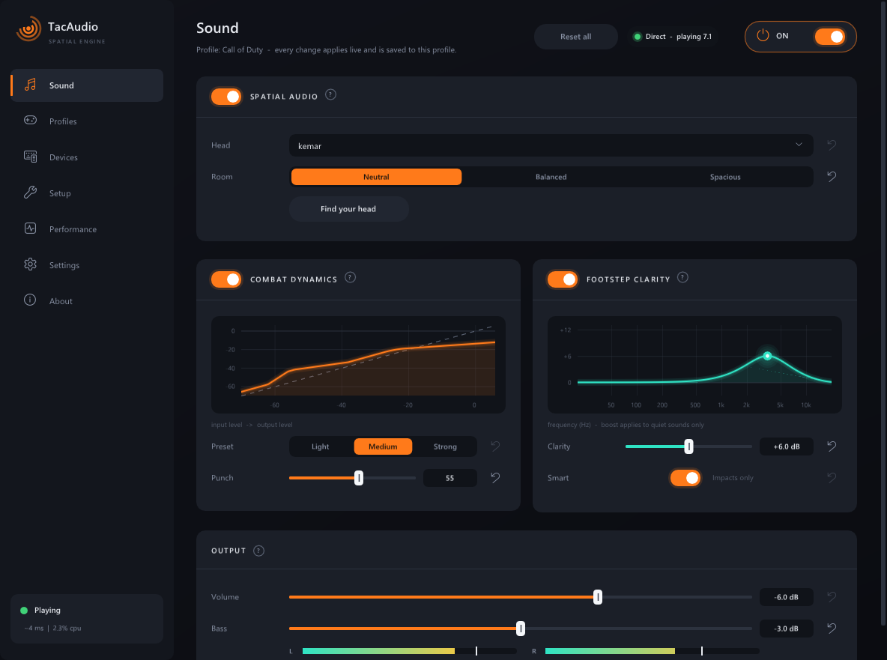
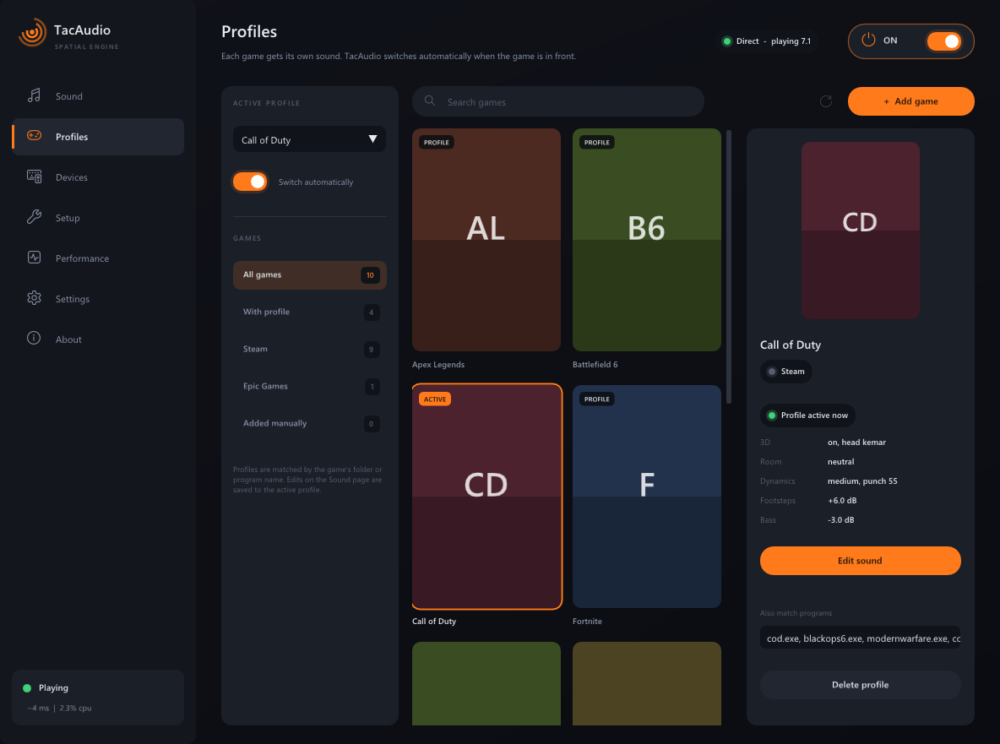
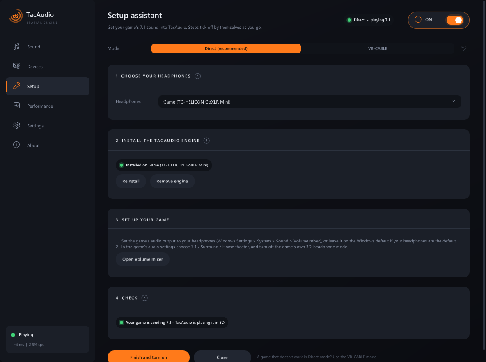
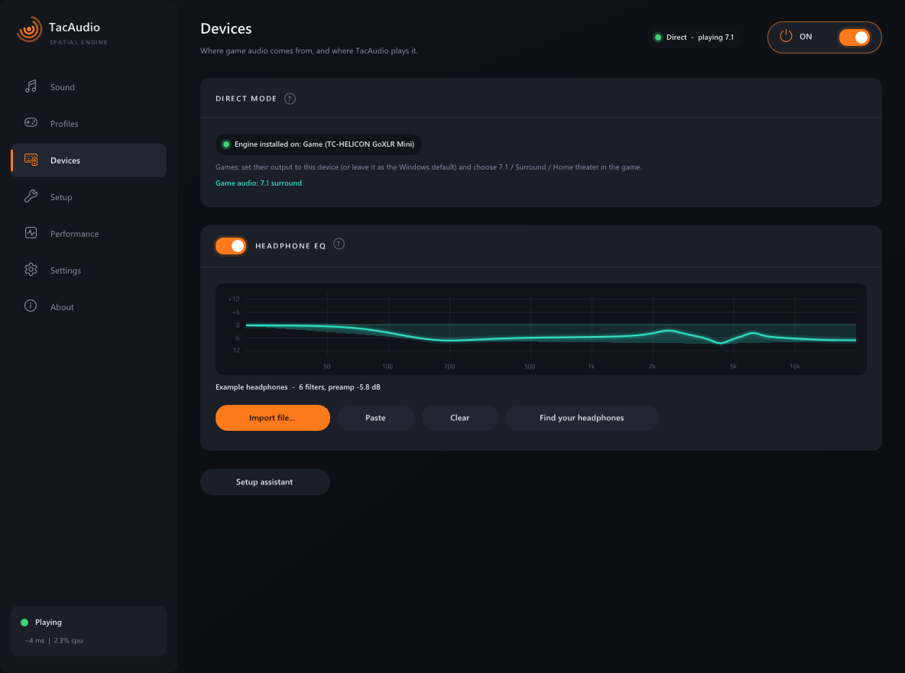
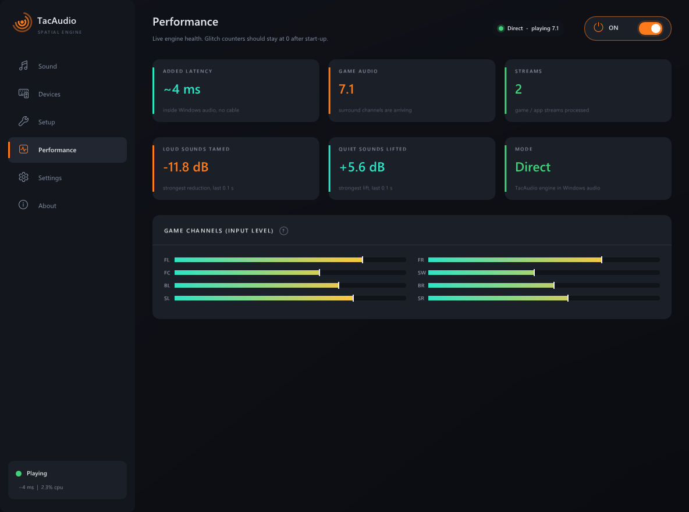
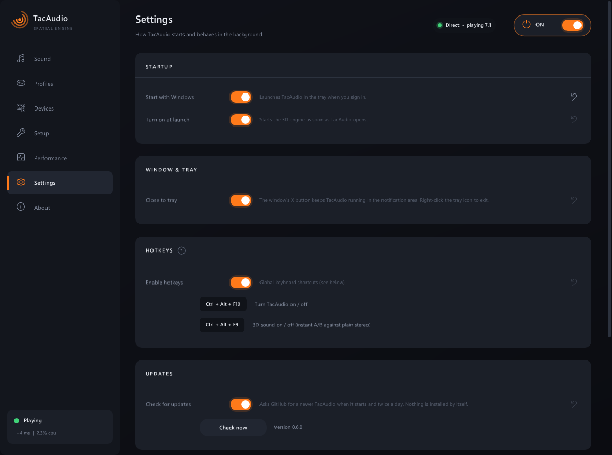

TacAudio turns your game's 7.1 surround into precise 3D sound on any headphones. It also lifts quiet footsteps and turns down loud gunfire. Free and open source, for Windows 10 and 11.

Shooters like Battlefield and Call of Duty mix their sound in 7.1 surround. On headphones you usually get a flat stereo version of it, so an enemy behind you sounds almost the same as one in front.
TacAudio places each of the game's speakers around your head using measured dummy-head recordings (HRTFs). Your brain hears that as real direction: front, back, sides and diagonals. TacAudio then cleans up the mix for competitive play, so loud guns stop drowning out quiet footsteps.
Every option changes the sound live while you play, and you can reset each one.
Measured SADIE II dummy heads (KEMAR, Neumann KU100), plus 18 optional human heads. Each one is equalised to sound neutral.
Boosts the footstep "crunch" around 3.5 kHz, only when that sound is quiet. Loud gun cracks in the same range aren't boosted. Smart mode boosts only short impacts like steps, landings and reloads.
Turns down gunfire, explosions and killstreaks and lifts quiet sounds. Each channel is handled on its own, so a gun on your left never quiets the steps behind you. The Punch control keeps your shots feeling solid.
The engine runs inside Windows audio on your headphones. You don't need a virtual cable, it adds about 4 ms of delay, and it keeps working after you close the app.
Finds your Steam and Epic games on its own, and you can add others yourself. Each game gets its own sound, and TacAudio switches to it when that game comes to the front.
A 2-minute listening test. You click where you hear footsteps coming from, and TacAudio picks the head that gives you the most accurate directions.
Import a correction curve for your headphone model in AutoEq / Equalizer APO format, from a file or by pasting it. It's applied after the 3D processing.
Scan a QR code and your phone becomes a remote: power, 3D, profile, footsteps, dynamics and volume, without alt-tabbing. It works only on your home Wi-Fi, and there's nothing to install.
When a new version comes out, click Update now. TacAudio replaces the old app and engine and keeps your settings, profiles and EQ.
It lives in the tray, starts with Windows if you want, and has global hotkeys.





The Setup assistant opens the first time you start TacAudio and walks you through each step.
Run the installer. It installs just for you, so it doesn't need administrator rights, and it adds a normal uninstaller in Windows Settings.
Choose your headphones and click Install engine. Windows asks for permission once, and sound pauses for a few seconds.
In your game's audio settings, choose 7.1 / Surround / Home theater. Turn off the game's own 3D headphone mode.
The assistant shows "Your game is sending 7.1". That's it, and you can tune everything live from there.
Yes. TacAudio is open source under the MIT licence. It has no account, no ads, no telemetry and no paid tier.
TacAudio doesn't touch the game at all. It doesn't inject anything, read memory or hook the game. It's a Windows audio effect on your headphones, the same kind of thing as the sound effects that come with headsets. We tested it in Call of Duty with no anti-cheat problems. The optional footstep ring is an on-screen sound visualisation, though, and some games and tournaments don't allow those. Check the rules before you turn it on in competitive play.
Any game that can output 7.1 or surround sound gets full 3D. That includes most modern shooters, such as Battlefield, Call of Duty and Warzone. Stereo games and apps still get the footstep, dynamics and EQ processing, but no surround directions.
Any wired, USB or wireless headphones that show up in Windows as a sound device. If you also import your model's EQ, it'll sound even more neutral.
Windows' Audio enhancements must be turned on for your headphones (they're on by default). Go to Settings → System → Sound → your headphones → Audio enhancements and set it to Device Default Effects. Also make sure the game outputs to the same device and is set to 7.1.
No. TacAudio only processes surround sound (7.1 / 5.1), which is normally your game. Discord, browsers, music and other stereo apps play clean, with just your headphone EQ. If your game only plays in stereo, turn on Settings → Other apps → Process stereo apps.
Click Remove engine in the Setup assistant, or uninstall TacAudio from Windows Settings → Apps. Either way, your device's original Windows effects come back exactly as they were.
It makes one request: an update check to GitHub that asks if there's a newer release. That's all it sends.
Free, open source and ready in about a minute.